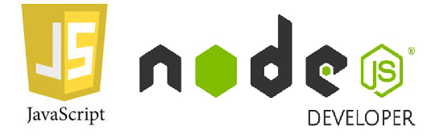
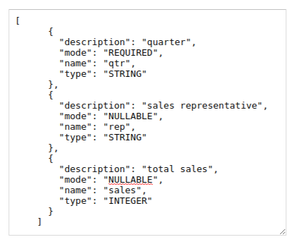

취미라 할 것은 별로 없습니다.
미래에 먹고 살기 위해서 계정과목해설과 분개를 배우고 있습니다.
문과이지만, 조촐하게 학교에서 행정지원을 돕기 위해 프로그래민 동아리 장을 맡고 있습니다.
노드와 안드로이드 스튜디오를 다룹니다.

요즘 json 포맷 생긴 것을 구경하는 취미가 생겼습니다. 정말 귀엽습니다. okhttp로 json http통신 구현하는 것이 즐겁습니다.

문과이지만, 친구들한테서 배운 프로그래밍으로 수작업을 전산으로 상당히 대체하고 있습니다.
오래 걸리던 여러 작업들이 자동화되어 한결 수월히 일하고 있습니다.